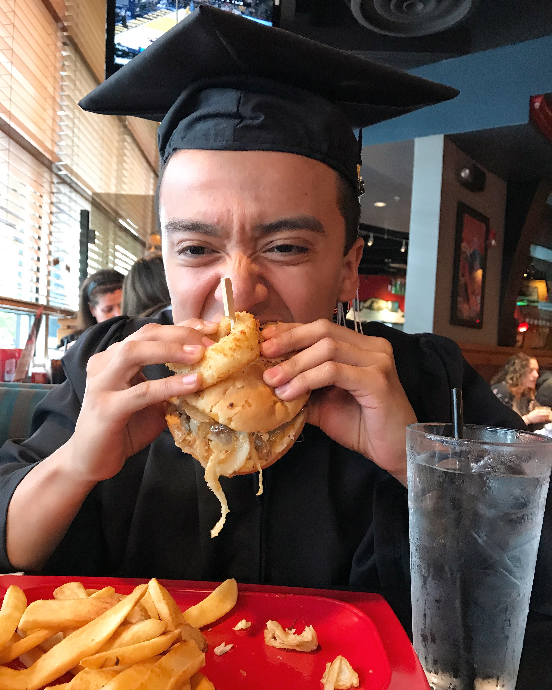

Jeff's Favorite Meals


Lasagna
Prep time: 15 mins
Cook time: 90 mins
For the meat sauce:
- 2 teaspoons extra virgin olive oil
- 1 pound ground beef chuck
- 1/2 medium onion, diced (about 3/4 cup)
- 1/2 large bell pepper (green, red, or yellow), diced (about 3/4 cup)
- 2 cloves garlic, minced
- 1 (28-ounce)can good-quality tomato sauce
- 3 ounces tomato paste (half a 6-ounce can)
- 1 (14 ounce) can crushed tomatoes
- 2 tablespoons chopped fresh oregano, or 2 teaspoons dried oregano
- 1/4 cup chopped fresh parsley (preferably flat leaf), packed
- 1 tablespoon Italian seasoning
- 1 pinch garlic powder and/or garlic salt
- 1 tablespoon red or white wine vinegar
- 1 tablespoon to 1/4 cup sugar (to taste, optional)
- Salt
To assemble the lasagna:
- 1/2 pound dry lasagna noodles (requires 9 lasagna noodles - unbroken)
- 15 ounces ricotta cheese
- 1 1/2 pounds (24 ounces) mozzarella cheese, grated or sliced
- 1/4 pound (4 ounces) freshly grated Parmesan cheese

Chickpea Curry
Prep Time: 15 mins
Cook Time: 40 mins
Ingredients:
- 1 14-oz. can diced tomatoes, drain before using
- 1 14-oz. can coconut milk
- 1 16-oz. can cooked chickpeas, drain and rinse
- 2 tbsp olive oil
- 1 large white onion diced
- ½ red bell pepper, sliced
- 1 large potato, cubed
- 1 large carrot, chopped
- 3 cloves garlic, minced
- 1 tbsp paprika
- 1 tbsp cumin
- 2 tsp ground turmeric
- 1 tsp black pepper
- 1/2 tsp cayenne pepper (or to taste)
- 2 tsp salt (plus more to taste)
2 bay leaves
- 1/2 freshly-squeezed lime juice (1 lime)
- chopped fresh cilantro for serving

Summer Tomato Risotto with Saffron
Prep Time: 15 mins
Cook Time: 30 mins
Ingredients:
- 1 lb cherry or grape tomatoes
- 1 tablespoon olive oil
- Risotto
- 1 white or yellow onion, diced
- 2 tablespoons olive oil
- 4–6 cloves garlic, rough chopped
- 1 teaspoon dried thyme (or 1 tablespoon fresh)
- 1 1/2 cups arborio rice or Spanish short-grain rice
- pinch saffron
- 1/2 teaspoon salt
- 1/2 teaspoon pepper
- 1/4 teaspoon smoked paprika
- 6–8 cups veggie stock or chicken stock, warmed
- 1 tablespoon butter
- 1/4 cup grated parmesan
- Garnishes: Italian parsley (or basil), lemon zest, chili flakes
Last updated 3 mins ago